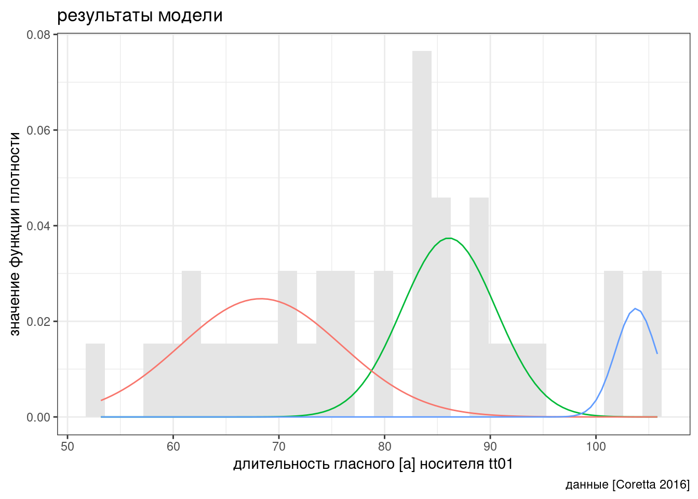

5 Байесовский статистический вывод
5.1 Нотация
В байесовском подоходе статистический вывод описывается формулой Байеса
\[P(θ|Data) = \frac{P(Data|θ)\times P(θ)}{P(Data)}\]
- \(P(θ|Data)\) — апостериорная вероятность (posterior)
- \(P(Data|θ)\) — функция правдоподобия (likelihood)
- \(P(θ)\) — априорная вероятность (prior)
- \(P(Data)\) — нормализующий делитель
В литературе можно еще встретить такую запись:
\[P(θ|Data) \propto P(Data|θ)\times P(θ)\]
Стоп, в прошлый раз мы говорили, что функция правдоподобия не обязана интегрироваться до 1, тогда почему, назвав часть формулы Байеса \(P(Data|θ)\) функцией правдоподобия, мы оставляем нотацию будто это функция вероятностей? Потому что это условная вероятность, она не обязана интегрироваться до 1.
5.2 Категориальный пример
Для примера я взял датасет, который содержит спамерские и обычные смс-сообщения, выложенный UCI Machine Learning на kaggle и при помощи пакета udpipe токенизировал и определил часть речи:
sms_pos <- read_csv("https://raw.githubusercontent.com/agricolamz/2021_da4l/master/data/spam_sms_pos.csv")
glimpse(sms_pos)Rows: 34
Columns: 3
$ type <chr> "ham", "ham", "ham", "ham", "ham", "ham", "ham", "ham", "ham", "…
$ upos <chr> "ADJ", "ADP", "ADV", "AUX", "CCONJ", "DET", "INTJ", "NOUN", "NUM…
$ n <dbl> 4329, 5004, 5832, 5707, 1607, 3493, 1676, 12842, 1293, 2424, 114…sms_pos %>%
group_by(type) %>%
mutate(ratio = n/sum(n),
upos = fct_reorder(upos, n, mean, .desc = TRUE)) %>%
ggplot(aes(type, ratio))+
geom_col()+
geom_label(aes(label = round(ratio, 3)), position = position_stack(vjust = 0.5))+
facet_wrap(~upos, scales = "free_y")
Давайте полученные доли считать нашей моделью: сумма всех чисел внутри каждого типа (ham/spam) дает в сумме 1. Мы получили новое сообщение
Call FREEPHONE 0800 542 0825 now!
Модель udpipe разобрала его следующим образом:
VERB NUM NUM NUM NUM ADV PUNCT
Понятно, что это – спам, но мы пытаемся применить байесовский статистический вывод, чтобы определить тип сообшения. Предположим, что машина считает обе гипотизы равновероятными, т. е. ее априорное распределение гипотез равно 0.5 каждая. На минуту представим, что машина анализирует текст пословно. Первое слово типа VERB. Функция правдоподобия равны 0.135 и 0.096 для сообщений типа ham и spam соответственно. Применим байесовский апдейт:
tibble(model = c("ham", "spam"),
prior = 0.5,
likelihood = c(0.135, 0.096),
product = prior*likelihood,
posterior = product/sum(product))Вот мы и сделали байесовский апдейт. Теперь апостериорное распределение, которые мы получили на предыдущем шаге, мы можем использовать в новом апдейте. Следующее слово в сообщении типа NUM.
tibble(model = c("ham", "spam"),
prior_2 = c(0.584, 0.416),
likelihood_2 = c(0.016, 0.117),
product_2 = prior_2*likelihood_2,
posterior_2 = product_2/sum(product_2))Уже на второй итерации, наша модель почти уверена, что это сообщение spam.